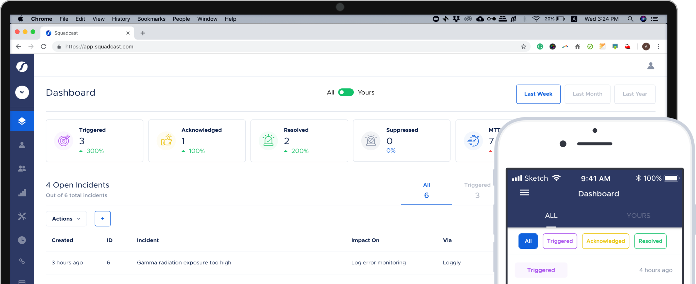

Quickstart Guide

Welcome to Squadcast!
Squadcast is an incident management platform built on DevOps & SRE best practices to help you adopt the same to simplify incident management, get meaningful notifications, and enable faster incident resolution in collaboration. Explore all the incredible SRE features and incident resolution capabilities in this documentation.
As soon you sign up, you’ll be on the Enterprise plan trial and will have access to all the features on the platform for 14 days. Post the trial period, you will be downgraded to the Free plan and you can upgrade to any of the higher plans based on your need and usage. You can see all our plans here.
Now that you’re here, we’ve put together a checklist of things that you can do to get started with Squadcast - a beginner’s guide.
Begin with the basic setup guide based on your role in the organisation: Account Owner, Admin, User or Stakeholder.
📛 Roles in Squadcast
Getting Started as an Account Owner
An Account Owner has all the privileges for managing an organization on Squadcast. There can be only one Account Owner for an organization. And only she can access the Billing page to manage subscription.
Learn more on how to manage your profile and other users. In case you’re also responsible for setting up of incident management tools, you can see the Admin’s section below.
Getting Started as an Admin
Admins on Squadcast have privileges to manage Users, Services, On-call Schedules, Escalation Policies, and so on. The only exception to an Admin’s account is the privilege to manage Billing which is an exclusive privilege of the Account Owner.
Getting Started as a User
Users on the platform on Squadcast have privileges to manage Services, On-call Schedules, Escalation Policies, and so on. Users will not have access to add or delete users or other privileges exclusive to Account Owner and Admins.
Irrespective of your role, you can go through our checklist to see how you can get more out of Squadcast 🚀
The Squadcast Checklist
Here’s a checklist of things to do to use Squadcast to its full potential or jump to the section of your choice!
- Setting up your on-call team
- Incident Response - Reduce MTTR with Faster Response
- Incident response - Noise Reduction & Contextual Awareness
- Incident communication
- SRE Visibility & Insights
- Squadcast Support - Essential Information
- Latest Product Updates
- Check out the Squadcast GitHub page
- Check out our Product Roadmap
- Browse Through Glossary
- Check out our Blog & Resources
- Here are the events we’ll be at
- Here’s how we engage with the community
1. 📅 Setting up your on-call team
📟 Set up your profile and add your notification rules
The My Profile holds the name and contact information such as phone number, SMS number, email address that is associated with your profile. Head over to add in or edit your contact information.
You will only be able to set your notification rules - rules for how you want to be notified and after how long from the time of incident trigger.
📱 Download our mobile app
You can use the mobile app to Acknowledge, Reassign, take Actions and Resolve from the Mobile App. The Mobile app will walk you into the incident dashboard where you will be able to view incidents from all states; Triggered (Open), Acknowledged (Investigating), Resolved and Suppressed. You can also see the on-call schedule for your organization on the mobile app.
The mobile app is available on both App Store and Google Play.
👥 Add users to your organization
As an Account Owner/ Admin, you can add or remove Admin, User, and Stakeholder accounts. See how to Manage Users.
🙌 Create a squad
A Squad is a group of users that can refer to a team or a project. Squads are handy when you need to notify the whole group together. For instance, when coordinated response is required for high-urgency high-complexity incidents, or at the end of an escalation policy when nobody has acknowledged. See how to Manage Squads.
Examples:
- Payment gateway Squad
- Backend Squad
- Frontend Squad
- All Hands
⏳ Create escalation policies
Squadcast enables you to add time-based escalation rules for Users, Squads (a group of Users) or Schedules (on-call schedules). See how to Manage Escalation Policies.
Escalation policies are attached to services. So, any alert or incident triggered for a service will notify based on the escalation policy attached to it.
Examples:
- Website Monitoring
- Payment Portal Monitoring
- Backend Issues
🔩 Add services
Services are at the core of Squadcast. A service represents an application or component that is crucial for your product or service. Services are created with an alert source integration through which incidents are triggered. Squadcast provides a Webhook URL to integrate with the tools you use. See how to Manage Services.
You can search through our documentation to find helpful alert source integration guides to walk you through any particular integration.
📅 Create schedules
Schedules can be used to create on-call schedules based on different time-zones, configurable rotations, and multiple hand-offs. You can create unique Schedules for each Services, having only the relevant engineers. See how to Manage Schedules
🏖️ Use Vacation mode for scheduled overrides
Vacation mode/ Alert Forwarding is used to forward one’s alerts to another on-call user for a period of time. It can be accessed from the Users page on the navigation sidebar. Alert Forwarding is typically used if the on-call user is sick, on vacation or had to step away due to an emergency and want another user to fill in for them. All the alerts that are assigned to him from his shifts, rotations or event directly, will be sent to the user that is stepping in. Alert forwarding is also known as Vacation Mode. To know more about how to set this up, click here
2. ⚡ Incident Response - Reduce MTTR with Faster Response
🔔 Check out the Incident Page
The Incidents Details page is where engineers can take actions and respond to the triggered incidents. Squadcast provides functionalities like War Room, Incident Timelines, and Squadcast Actions.
👍 Respond to an Incident
You can respond to a triggered incident by Acknowledging and Resolving it. You can do so via phone call, slack, mobile app and web app. You can check out what each of these incident states mean here.
➕ Add Extensions
Extensions are deeper integrations with tools where actions can be taken from within the platform to reflect on the tool as well. Within Squadcast, this is called Integrations and can be found on the navigation sidebar. You can find supported tools on this page to augment your incident management process.
Typically, extensions augment your incident management process by connecting with other tools where actions are required. Typically, ITSM, Communication, Web conferencing, Version Control, CI/CD, SSO tools would act as extensions.
✔️ Resolve an Incident with Squadcast Actions
Squadcast Actions lets you take actions directly from Squadcast as a response to incidents by clicking the More Actions button from the incident page. Squadcast Actions are typically used as a means to reduce any customer impacting issue as soon as possible. In some cases, this resolves the issue and in others, there is a need for longer term remediation. This is left to the user and team to decide and act on. To know more about how to configure this, click here.
Today the platform has the following Actions:
Some simple examples of actions are rebuilding your project, rolling back to the previous build, rebooting a server. You can choose to build a repository of any actions, even more complex ones to take action from Squadcast.
📜 Create a Squadcast Runbook
Squadcast Runbooks are executable scripts that you can create and store within the platform to execute when repetitive incidents are triggered. You can execute Squadcast Runbooks from the More Actions button on the . incident page and resolve your incidents quickly and bring down your MTTR significantly. The link to the status of the script execution will be added to the timeline and you should be able to see the status of the same within Squadcast. To know more about how to configure your own Squadcast Runbook, click here.
🔀 Configure Routing Rules for automatic overrides
Alert routing allows you to configure rules to ensure that alerts are routed to the right responder with the help of event tags attached to each alert.Routing is a part of the rules engine associated with each service. You can access routing rules from a service’s options dropdown.
Note that this rule will override the escalation policy attached to the service. This is typically used in cases where severities are configured via tags and each severity type is to be handle by a different level of on-call user. To know more about how to configure your routing rules, click here.
3. 📟 Incident response - Noise Reduction & Contextual Awareness
🏷️ Add Tags to Incidents
Incident tags are used to add more context to your incident and helps classify incidents. You can configure tags from Tagging Rules associated with a service. You can configure tagging rules with an incident JSON to automatically add tags when incidents are triggered or you can manually create and update them. To know more about how to configure this, click here.
⚠️ Deduplicate to reduce alert fatigue
Alert de-duplication** can help you reduce alert noise by organising and grouping relevant alerts. This also provides easy access to similar alerts when needed. You can configure deduplication rules with an incident JSON to automatically deduplicate and group similar incidents and can see this reflect on the incident dashboard. To know more about how to configure this, click here.
🔕 Suppress non-actionable alerts
Suppression rules is a part of the Squadcast Rules Engine that allows you to configure rules to automatically suppress non-actionable alerts such as warning, informational or test alerts. Based on your configuration, alerts will be suppressed and you will not be unnecessary notified. All suppressed data will still be available on the platform. See how to configure your Suppression Rules.
4. 🔊 Incident communication
✅ Set up your Public and Private Status Pages
StatusPage helps you communicate the status of your services to your customers or internal teams at all times as opposed to you getting to know the status of your service though support tickets. You can access StatusPage from the navigation sidebar.
StatusPages can either be public (accessible by everyone) or private (accessible by just your team on Squadcast) on Squadcast. You can also add a subscription option for your public status page so customers are automatically informed of any updates on the StatusPage. To set up your Status Page, click here.
📖 Create a Postmortem report or create your own template
An Incident postmortem is a post-incident review of all the activity pertaining to resolving the incident. Typically, an incident postmortem should contain details of the incident, impacted service, alert source, dependant services, timeline of resolution activity, users involved, corrective & remediation actions and lessons learned.
You can create an incident postmortem from within an incident page once the incident is resolved from the options icon on the right corner of the incident details section. You can choose from several popularly used postmortem templates or have your admin/ account owner create one for your organization. To know more about creating and using Postmortem templates, click here.
5. 😎 SRE Visibility & Insights
💯 Setup Service Level Objectives (SLOs)
The Service Levels feature allows you to create Service Level Objectives (SLOs) for Service Level Indicators (SLIs) like latency, memory and status codes. Any breach of SLOs for Services will trigger an incident and notify the relevant Users, Squads (a group of Users) or Schedules (on-call schedules). See how to configure Service Levels →.
📊 Use Analytics and Reports to Improve your Incident Response
The Analytics page helps you see how your organisation has performed in a given time period by providing you the hard numbers in easy to understand graphs and charts. You will be able to view the SLO dashboard, number of incidents by the state, MTTA and MTTR analysis. You can also filter reports based on the impacted service and the organization for which the incidents were triggered. To know more about using Analytics, click here.
6. 😊 Squadcast Support - Essential Information
At Squadcast, we pride ourselves in the kind of support we offer to our users and customers. Feel free to reach out to us on any of the following channels and we’ll be right with you.
- In-App Chat
- Support Email
- Phone Number: +1 650 670 3104
- Documentation Support Hub
- GitHub Support
7. ✨ Latest Product Updates
We are constantly updating our platform by adding new features, alert source integrations and other essential extensions. You can check out our latest releases in our Squadcast Updates page.
8. ⭐ Check out the Squadcast GitHub page
If you’re curious about what we do everyday, feel free to drop by the SquadcastHQ GitHub page.
You can check out and contribute to our curated repository of awesome-sre-tools! 😊
9. 🤓 Check out our Product Roadmap
We are building an end-to-end Incident Management product built on SRE best practices. We’re always open to hearing new ideas and improvements. You can check out our Public Roadmap to know what we have in store for the near future!
Drop us a line at ideas@squadcast.com with your ideas and feature requests!
10. 📖 Browse Through Glossary
You can browse our Glossary for terminologies that we use within the platform. This will give a fair understanding of each terminology and functionalities associated with them.
11. 📚 Check out our Blog & Resources
If you’re looking for more information on Squadcast, Incident Management, SRE, DevOps and general best practices associated with these fields, check out the Squadcast Blog. You can also see additional information like case studies, comparison pages, events we’ll be at and our changelog from under the resource dropdown on our website header.
12. ❤️ Here are the events we’ll be at
You can catch Squadcast participating in prominent technology events around the world! Meet our team to discuss all things SRE and what we’re building at Squadcast.
You can check out all the events we’ll be at on the Squadcast Events
13. 🎊 Here’s how we engage with the community
From discussing all things SRE, hosting a webinar, contributing to our blog, getting featured on SRE Speak to speaking at meetups, there are several ways you can participate and give back to the SRE community. To find out how you can be a part of our super awesome community, drop us a line at marketing@squadcast.com and hear back from us soon!
In case you don’t find an integration, email us at
support@squadcast.com. Our team will reach out to you within 1 working day.